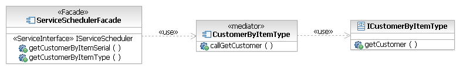
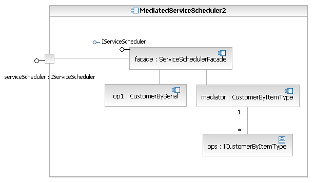

| Example: Mediated Operation Service Component Pattern |
 |
|
| Related Elements |
|---|
Where there is the possibility that a service consumer's request might be routed to one of a selection of operation components for execution, it is possible to extend the pattern with a mediator to route these messages, as shown below. We stereotype the component/class as <<mediator>> for clarification. The exact mechanism used for mediation is undefined. A static set of implementations could be known ahead of time, a registry of some sort could also be used to map to the particular implementation based on the consumer, content of the request message, and so forth. This pattern is not intended for use with the single-operation pattern. Figure 1. Outline of the Mediated Service Component pattern
This also affects the composite structure view of the service component; as shown below, the mediator connection is shown from the facade which uses it to direct calls to the operation components. Figure 2. Composite structure rendering of the Mediated Operation Service pattern
If a registry, external to the mediator itself, is used, it is not necessarily possible to show static usage dependencies from the mediator to the operation components or connectors between parts in the composite structure diagram. So, how can we model a dependency from the mediator to the mediated operation components? In the following diagram, we have introduced an interface to be implemented by each operation component. We can then model the usage from the mediator to the interface, as shown in Figure 3. Figure 3. Modeling the pattern when the implementing components are accessed using a registry  We also change the relationship in the composite structure diagram, including a new part typed by the interface, and denote the multiplicity between the mediator and operation components on the connector. These revisions are illustrated in Figure 4. Figure 4. Composite structure rendering of the revised pattern  |


| Concepts | |
|---|---|
| Examples | |
| Guidelines |
Licensed Materials - Property of IBM |